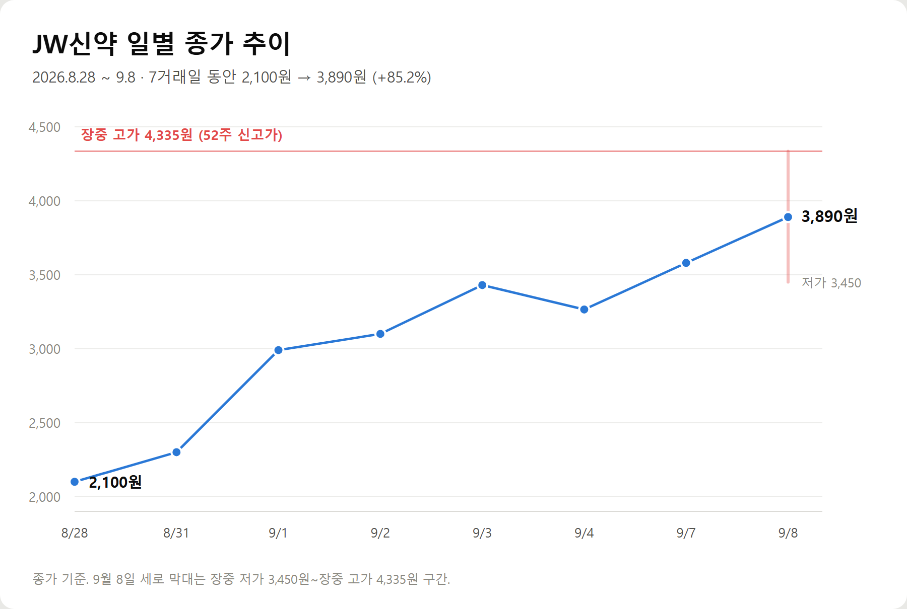
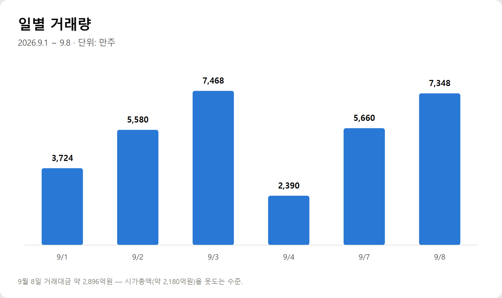
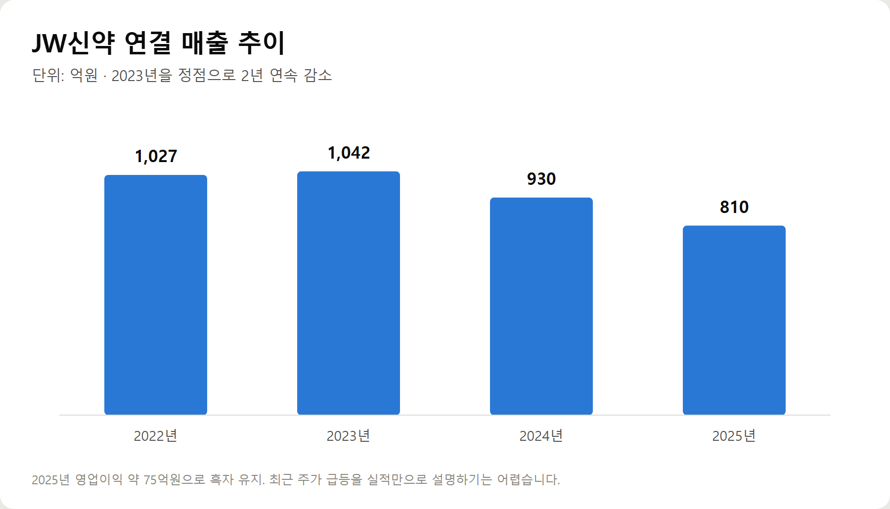
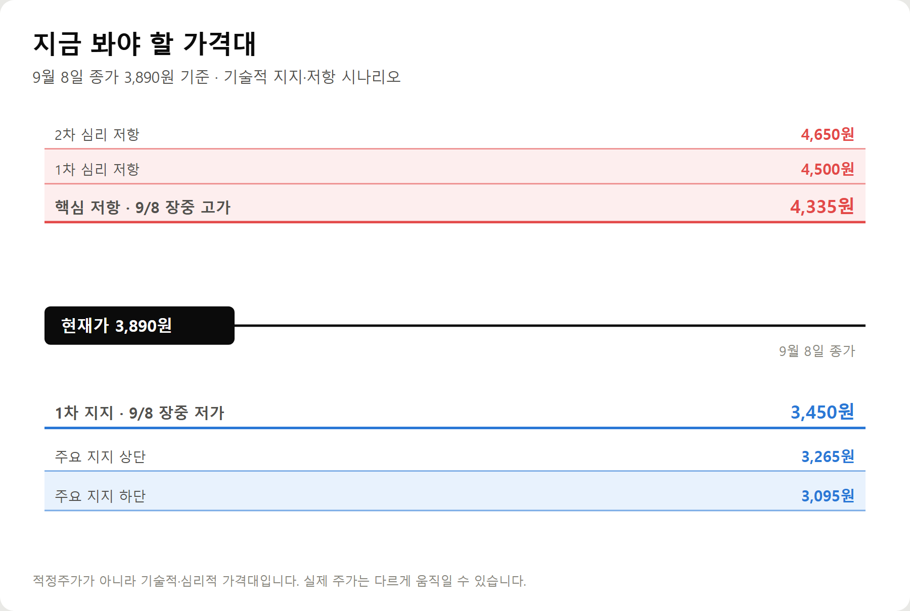

<meta charset="utf-8">
<title>JW신약 7거래일 +85% — 4,335원 저항과 3,450원 지지 — 나의 투자 그리고 행복한 여행</title>
<meta name="description" content="JW신약(067290)이 8월 28일 2,100원에서 9월 8일 3,890원까지 약 85% 올랐습니다. 재료인 JW0061은 JW중외제약 파이프라인입니다. 지지·저항 가격대를 다시 계산했습니다.">
<meta name="viewport" content="width=device-width, initial-scale=1">
<link rel="canonical" href="https://danielmoon82.github.io/moon/posts/jw-shinyak-2026-09-08.html">
<link rel="preconnect" href="https://fonts.googleapis.com">
<link rel="preconnect" href="https://fonts.gstatic.com" crossorigin>
<link rel="stylesheet" href="https://fonts.googleapis.com/css2?family=Hahmlet:wght@400;600;800&family=IBM+Plex+Mono:wght@400;500&family=IBM+Plex+Sans+KR:wght@300;400;500;600&display=swap">

<style>
  :root{
    --paper:#E7EBF1;--surface:#F4F6FA;--surface-2:#DCE2EC;
    --ink:#0F1729;--ink-2:#3D4A63;--ink-3:#6B7891;
    --line:#C6CEDB;--line-soft:#D6DCE6;--accent:#B06A15;--accent-bright:#C2761A;
    --up:#E5484D;--down:#3B82F6;
    --f-display:"Hahmlet",'Nanum Myeongjo',"Apple SD Gothic Neo",serif;
    --f-body:"IBM Plex Sans KR","Apple SD Gothic Neo","Malgun Gothic",sans-serif;
    --f-mono:"IBM Plex Mono","SFMono-Regular",Consolas,monospace;
    --pad:clamp(20px,5vw,64px);
  }
  @media (prefers-color-scheme:dark){
    :root:not([data-theme="light"]){
      --paper:#0B1120;--surface:#121A2C;--surface-2:#1A2439;
      --ink:#E9EEF7;--ink-2:#A9B5C9;--ink-3:#72809A;
      --line:#26314A;--line-soft:#1D2739;--accent:#E8A33D;--accent-bright:#F0B45C;
    }
  }
  *{box-sizing:border-box;}
  body{margin:0;background:var(--paper);color:var(--ink);font-family:var(--f-body);
    font-weight:300;font-size:1rem;line-height:1.75;-webkit-font-smoothing:antialiased;}
  a{color:inherit;}
  img{max-width:100%;height:auto;}
  .wrap{max-width:760px;margin:0 auto;padding-inline:var(--pad);}
  .nav{position:sticky;top:0;z-index:20;background:color-mix(in srgb,var(--paper) 88%,transparent);
    backdrop-filter:saturate(180%) blur(12px);border-bottom:1px solid var(--line);}
  .nav-in{display:flex;align-items:center;justify-content:space-between;height:58px;}
  .brand{font-family:var(--f-display);font-weight:600;font-size:1rem;letter-spacing:-.02em;text-decoration:none;}
  .back{font-family:var(--f-mono);font-size:.72rem;color:var(--ink-3);text-decoration:none;}
  .article{padding-block:clamp(40px,7vw,72px) clamp(56px,9vw,96px);}
  .eyebrow{font-family:var(--f-mono);font-size:.68rem;letter-spacing:.16em;text-transform:uppercase;
    color:var(--accent);margin:0 0 14px;}
  h1{font-family:var(--f-display);font-weight:800;font-size:clamp(1.6rem,4.4vw,2.3rem);
    line-height:1.3;letter-spacing:-.03em;margin:0 0 16px;}
  .byline{font-family:var(--f-mono);font-size:.72rem;color:var(--ink-3);
    padding-bottom:24px;border-bottom:1px solid var(--line);margin-bottom:32px;}
  h2{font-family:var(--f-display);font-weight:600;font-size:1.25rem;letter-spacing:-.02em;margin:42px 0 14px;}
  h3{font-family:var(--f-display);font-weight:600;font-size:1.05rem;letter-spacing:-.02em;
    margin:30px 0 10px;padding-top:14px;border-top:1px solid var(--line-soft);}
  h3 .code{font-family:var(--f-mono);font-size:.7rem;font-weight:400;color:var(--ink-3);margin-left:6px;}
  p{margin:0 0 18px;color:var(--ink-2);}
  ul.checks{margin:0 0 18px;padding-left:20px;color:var(--ink-2);}
  ul.checks li{margin-bottom:8px;font-size:.94rem;}
  table{width:100%;border-collapse:collapse;font-size:.88rem;margin-bottom:8px;}
  th{font-family:var(--f-mono);font-size:.66rem;letter-spacing:.06em;text-transform:uppercase;
    color:var(--ink-3);text-align:right;padding:8px 6px;border-bottom:1px solid var(--line);}
  th:first-child{text-align:left;}
  td{padding:10px 6px;border-bottom:1px solid var(--line-soft);color:var(--ink-2);}
  td.num{font-family:var(--f-mono);text-align:right;font-variant-numeric:tabular-nums;}
  td.up{color:var(--up);} td.down{color:var(--down);}
  .scroll{overflow-x:auto;}
  figure{margin:22px 0;}
  figure img{display:block;border-radius:3px;background:var(--surface-2);}
  figcaption{margin-top:8px;font-family:var(--f-mono);font-size:.68rem;color:var(--ink-3);text-align:center;}
  .note{margin-top:34px;padding:16px 18px;border-left:3px solid var(--accent);
    background:var(--surface);border-radius:0 3px 3px 0;}
  .note p{margin:0;font-size:.85rem;color:var(--ink-3);}
  .foot{border-top:1px solid var(--line);background:var(--surface);padding-block:30px 38px;}
  .foot p{margin:0;font-size:.8rem;color:var(--ink-3);}
</style>

<nav class="nav">
  <div class="wrap nav-in">
    <a class="brand" href="../index.html">나의 투자 그리고 행복한 여행</a>
    <a class="back" href="../index.html#stocks">← 시황으로</a>
  </div>
</nav>

<main class="wrap article">
  <p class="eyebrow">Market</p>
  <h1>JW신약 7거래일 +85% — 지금 봐야 할 가격대</h1>
  <p class="byline">067290 · 코스닥 · 2026-09-08 종가 기준</p>

  <p>한 줄 요약: 7거래일 +85.2%, 재료는 탈모 테마, 다만 핵심 신약의 개발 주체는 JW신약이 아니라 JW중외제약입니다.</p>
  <p>JW신약은 8월 28일 2,100원에서 9월 8일 3,890원까지 올랐습니다. 9월 8일 장중 고가는 4,335원으로 52주 신고가였고, 종가는 거기서 약 10.3% 밀린 자리였습니다.</p>
  <p>급등의 배경에는 JW그룹의 탈모 신약 후보물질 JW0061에 대한 기대가 있습니다. 그런데 JW0061을 개발하는 회사는 JW중외제약입니다.</p>
  <p>이 글은 지금 시점에서 확인 가능한 숫자만으로 재료와 가격대를 정리한 기록입니다.</p>
  <h2>기준 시점</h2>
  <p>JW신약(067290) · 코스닥</p>
  <p>9월 8일 종가: 3,890원</p>
  <ul class="checks">
    <li>장중 고가: 4,335원</li>
    <li>장중 저가: 3,450원</li>
    <li>거래량: 약 7,348만주</li>
    <li>거래대금: 약 2,896억원</li>
    <li>시가총액: 약 2,180억원</li>
  </ul>
  <p>9월 8일 하루 거래대금만으로 시가총액을 넘어설 정도로 거래가 집중됐습니다.</p>
  <figure><figcaption>JW신약 일별 종가 추이 (2026.8.28~9.8)</figcaption></figure>
  <h2>1. JW신약을 끌어올린 재료는 무엇인가?</h2>
  <p>이번 상승의 중심에는 탈모 치료제 관련 기대감이 있습니다.</p>
  <p>특히 JW그룹의 탈모 신약 후보물질인 JW0061이 시장의 관심을 받고 있습니다.</p>
  <p>다만 중요한 사실이 있습니다. JW0061은 JW신약이 개발하는 신약이 아닙니다. 개발 주체는 JW중외제약입니다.</p>
  <p>JW0061은 모낭 줄기세포에 발현되는 GFRA1 수용체를 표적으로 하는 First-in-Class 탈모 치료제 후보물질입니다.</p>
  <p>JW중외제약에 따르면 JW0061은 GFRA1 수용체에 직접 결합해 하위 신호전달체계를 활성화하고, 이를 통해 모낭 생성과 모발 성장을 촉진하는 방식입니다.</p>
  <p>기존 탈모 치료제가 주로 남성호르몬 억제 또는 혈관 확장에 기반한 것과 차별화된 기전입니다.</p>
  <p>JW0061은 2026년 2월 식품의약품안전처로부터 임상 1상 시험계획 승인을 받았습니다.</p>
  <p>임상 1상은 서울대병원에서 한국인과 코카시안 건강한 성인 104명을 대상으로 안전성·내약성 및 약동학 등을 평가하는 방식으로 진행될 예정입니다.</p>
  <p>또한 JW중외제약은 JW0061의 미국 물질특허를 등록했으며 미국에서 2039년 5월까지 독점권을 확보했다고 밝혔습니다. 한국·일본·중국·호주·브라질 등을 포함한 9개국에서도 물질특허 등록을 완료했다고 설명했습니다.</p>
  <p>전임상에서는 인간 피부 오가노이드 실험에서 기존 표준치료제 대비 최대 7.2배의 모낭 생성 효과, 동물모델에서 최대 39%의 효능 개선 결과가 발표됐습니다.</p>
  <div class="note"><p>다만 이것은 전임상 결과입니다. 아직 사람을 대상으로 한 임상시험에서 효능이 입증된 것은 아닙니다.</p></div>
  <h2>2. 그런데 왜 JW중외제약보다 JW신약이 더 크게 오를까?</h2>
  <p>여기가 이번 상승을 이해하는 핵심입니다.</p>
  <p>JW0061의 직접 개발 주체는 JW중외제약이고, JW중외제약의 연구개발 파이프라인에도 JW0061이 임상 1상 단계로 올라와 있습니다.</p>
  <p>그런데 이번 상승에서는 JW신약의 주가가 훨씬 강하게 움직였습니다.</p>
  <p>JW신약은 탈모 관련 제품을 포함한 피부과·비뇨기과 중심의 전문의약품을 판매하는 제약회사입니다. 따라서 탈모 테마가 강해질 경우 JW신약도 관련주로 묶일 수 있습니다.</p>
  <p>하지만 JW0061의 개발 성공에 따른 직접적인 가치 상승과 JW신약의 주가 상승을 동일시해서는 안 됩니다.</p>
  <p>결국 현재 JW신약의 상승에는 다음이 함께 작용하고 있다고 보는 것이 합리적입니다.</p>
  <ul class="checks">
    <li>탈모 테마</li>
    <li>JW그룹 관련 기대감</li>
    <li>소형주 특유의 수급 탄력</li>
    <li>단기 매매자금 유입</li>
  </ul>
  <h2>3. 최근 주가 상승을 숫자로 보면</h2>
  <p>주가는 다음과 같이 움직였습니다.</p>
  <ul class="checks">
    <li>8월 28일 · 2,100원 · +5.53%</li>
    <li>8월 31일 · 2,300원 · +9.52%</li>
    <li>9월 1일 · 2,990원 · +30.00%</li>
    <li>9월 2일 · 3,100원 · +3.68%</li>
    <li>9월 3일 · 3,430원 · +10.65%</li>
    <li>9월 4일 · 3,265원 · -4.81%</li>
    <li>9월 7일 · 3,580원 · +9.65%</li>
    <li>9월 8일 · 3,890원 · +8.66%</li>
  </ul>
  <p>8월 28일 종가 2,100원에서 9월 8일 종가 3,890원까지 약 85.2% 상승했습니다.</p>
  <p>9월 8일에는 장중 4,335원까지 올라갔지만 결국 3,890원으로 마감했습니다. 즉 4,335원에서 3,890원까지 약 10.3% 밀린 채 마감한 것입니다.</p>
  <p>장중 고점에서 매물이 상당히 나왔다는 점은 단기적으로 중요한 신호입니다.</p>
  <h2>4. 거래량은 더 주의해서 봐야 한다</h2>
  <p>최근 거래량은 상당히 커졌습니다.</p>
  <figure><figcaption>9월 1일~8일 일별 거래량 (단위: 만주)</figcaption></figure>
  <p>특히 9월 8일에는 거래대금이 약 2,896억원까지 증가했습니다. 시가총액보다 하루 거래대금이 훨씬 큰 수준입니다.</p>
  <p>이런 거래량은 주가를 빠르게 끌어올릴 수도 있지만, 반대로 매수세가 약해지는 순간 급격한 가격 조정이 나타날 가능성도 높입니다.</p>
  <p>따라서 지금부터는 주가보다 거래량과 종가 위치를 함께 봐야 합니다.</p>
  <h2>5. 과거에도 비슷한 급등이 있었다</h2>
  <p>JW신약은 올해 6월에도 비슷한 경험을 했습니다.</p>
  <p>2026년 6월 JW신약은 주가 급등으로 투자경고종목으로 지정됐습니다. 한국거래소는 6월 24일부터 JW신약을 투자경고종목으로 지정하면서 추가 상승 시 매매거래가 정지될 수 있다고 공시했습니다.</p>
  <p>이후 7월에는 투자경고종목 지정이 해제됐고, 7월 8일 하루 동안 투자주의종목으로 지정됐으며 추가 상승 시 투자경고종목으로 재지정될 수 있다는 예고가 나왔습니다.</p>
  <p>이번에도 9월 3일 투자경고종목 지정예고가 공시됐습니다.</p>
  <p>따라서 현재 JW신약을 볼 때는 탈모 테마만 볼 것이 아니라 시장경보 지정 가능성도 함께 봐야 합니다.</p>
  <h2>6. 재무상태는 어떨까?</h2>
  <p>JW신약의 재무구조가 완전히 나쁜 회사라고 볼 수는 없습니다.</p>
  <p>2025년 연결 기준 매출은 약 810억원, 영업이익은 약 75억원이었습니다.</p>
  <figure><figcaption>JW신약 연결 매출 추이 (단위: 억원)</figcaption></figure>
  <p>따라서 '매출이 3년 연속 감소했다'는 표현은 정확하지 않습니다. 정확하게는 2023년을 정점으로 2024년과 2025년 2년 연속 매출이 감소했습니다.</p>
  <p>2025년에는 영업이익 75억원을 기록하며 흑자를 유지했습니다.</p>
  <p>즉 현재 주가 상승을 실적 성장만으로 설명하기는 어렵습니다.</p>
  <h2>7. 그렇다면 지금 주가는 비싼가?</h2>
  <p>여기서는 상당히 조심해야 합니다.</p>
  <p>9월 8일 종가가 3,890원이고 52주 최고가는 4,335원입니다. 이미 52주 고점 부근까지 올라왔습니다.</p>
  <p>따라서 지금 가격에서 새로 매수하는 사람은 과거 저점에서 이미 큰 수익을 낸 투자자와 전혀 다른 위치에 있습니다.</p>
  <p>2,100원에서 매수한 사람에게 3,890원은 큰 수익 구간이지만, 3,890원에서 새롭게 매수하는 사람에게는 '4,335원 돌파 실패 → 조정'이라는 위험을 바로 감수해야 하는 가격입니다.</p>
  <h2>8. 기술적으로 중요한 가격</h2>
  <p>현재 가장 중요한 가격은 4,335원입니다. 9월 8일 장중 고점이기 때문입니다.</p>
  <figure><figcaption>9월 8일 종가 3,890원 기준 지지·저항 가격대</figcaption></figure>
  <p>1차 저항은 4,335원입니다. 이 가격을 거래량을 동반해 돌파하고 종가까지 지지한다면 새로운 상승 구간이 열릴 가능성이 있습니다.</p>
  <p>반대로 4,335원을 돌파하지 못하고 고점에서 계속 밀린다면 단기 차익실현 물량이 나올 가능성이 있습니다.</p>
  <p>1차 지지는 3,450원입니다. 9월 8일 장중 저점이며, 이 가격을 지키는지가 단기적으로 중요합니다.</p>
  <p>주요 지지는 3,265~3,095원 구간입니다. 9월 4일 종가와 저점 구간이며, 특히 3,095원은 최근 상승 과정에서 중요한 단기 저점입니다.</p>
  <h2>9. 목표가는 어떻게 봐야 할까?</h2>
  <p>기존에 계산했던 4,200원 목표가는 이미 무의미해졌습니다. 9월 8일 장중 4,335원까지 올라 4,200원을 이미 돌파했기 때문입니다.</p>
  <p>따라서 지금 시점에서는 목표가를 하나의 숫자로 정하기보다 가격대별로 보는 것이 더 합리적입니다.</p>
  <p>1차 목표이자 저항은 4,335원입니다. 현재 가장 중요한 단기 고점입니다.</p>
  <p>거래량이 유지되면서 4,335원을 확실하게 돌파한다면 다음 심리적 가격대는 4,500원 → 4,650원 순으로 볼 수 있습니다.</p>
  <div class="note"><p>다만 이것은 기업가치를 계산한 적정주가가 아니라 기술적·심리적 가격대입니다.</p></div>
  <p>추가적인 임상 진전이나 기술이전 등 새로운 실질적 재료가 발생한다면 단순 기술적 분석을 넘어선 재평가가 가능할 수 있습니다.</p>
  <p>반대로 새로운 재료 없이 탈모 테마와 단기 수급만으로 상승한다면 고점 변동성이 매우 커질 수 있습니다.</p>
  <h2>10. 손절가는 어디로 봐야 할까?</h2>
  <p>'무조건 이 가격에 손절해야 한다'고 말하기보다는, 단기 상승 추세가 깨지는 가격을 기준으로 보는 것이 좋습니다.</p>
  <p>단기 기준은 3,450원입니다. 9월 8일 저점이며, 이 가격을 종가 기준으로 이탈하면 단기 상승세가 약해졌다고 판단할 수 있습니다.</p>
  <p>더 중요한 기준은 3,265~3,095원입니다. 이 구간까지 무너지면 최근 급등 과정에서 만들어진 상승 파동이 상당 부분 훼손됐다고 볼 수 있습니다.</p>
  <p>따라서 신규 매수자라면 반드시 자신의 손실 허용 범위를 먼저 정한 뒤 매수해야 합니다.</p>
  <h2>11. 지금 JW신약을 사도 될까?</h2>
  <p>제 판단은 간단합니다. 지금 가격에서 추격매수는 매력도가 높지 않습니다.</p>
  <p>첫째, 이미 2,100원에서 3,890원까지 약 85% 상승했습니다.</p>
  <p>둘째, 9월 8일 장중 4,335원까지 올라간 뒤 고점에서 상당 부분 밀렸습니다.</p>
  <p>셋째, 현재 상승의 핵심 재료인 JW0061은 JW신약이 직접 개발하는 신약이 아니라 JW중외제약의 파이프라인입니다.</p>
  <p>따라서 지금 가격에서 매수하려면 '탈모 신약 때문에 오른다'는 이유만으로 접근해서는 안 됩니다.</p>
  <h2>12. 그렇다면 어떤 가격에서 관심을 가져볼까?</h2>
  <p>현재 가격 3,890원에서 무리하게 추격하기보다는 가격대를 나누어 보는 것이 좋습니다.</p>
  <ul class="checks">
    <li>공격적인 매매 — 3,450원 부근의 지지 여부 확인</li>
    <li>보수적인 매매 — 3,265~3,100원 구간까지 조정 후 거래량과 반등 확인</li>
    <li>상승 추세 확인 매매 — 4,335원 돌파 후 종가 기준 안착 여부 확인</li>
  </ul>
  <p>즉 지금은 '무조건 사야 하는 자리'라기보다 '다음 움직임을 확인해야 하는 자리'에 가깝습니다.</p>
  <h2>13. 특히 미수·신용은 조심해야 한다</h2>
  <p>JW신약처럼 단기간에 큰 폭으로 움직이는 종목에서 미수·신용을 사용하는 경우, 주가가 예상과 반대로 움직였을 때 손실이 빠르게 확대될 수 있습니다.</p>
  <p>또한 시장경보 단계와 증권사별 증거금 정책에 따라 주문 조건이 달라질 수 있으므로, 실제 주문 전에는 본인이 사용하는 증권사의 해당 종목 주문 화면에서 미수 가능 여부와 증거금률을 확인해야 합니다.</p>
  <p>'투자경고니까 무조건 미수 불가'라고 단정해서는 안 됩니다. 2026년 거래소 규정이 시장경보종목의 위탁증거금 제도를 완화하는 방향으로 변경됐기 때문입니다.</p>
  <h2>14. 앞으로 반드시 확인할 세 가지</h2>
  <p>첫째, 4,335원을 돌파하는가. 현재 가장 중요한 가격이며, 돌파 후 종가까지 지지하는지 확인해야 합니다.</p>
  <p>둘째, 거래량이 계속 증가하는가. 9월 8일 거래량은 약 7,348만주였습니다. 이후 주가가 오르는데 거래량이 지나치게 줄어든다면 상승 에너지가 약해지는지 확인할 필요가 있습니다. 반대로 급등하면서 거래량이 계속 폭증한다면 단기 과열 가능성도 함께 커집니다.</p>
  <p>셋째, JW중외제약이 함께 움직이는가. JW0061 관련 뉴스가 나왔을 때 두 종목이 함께 움직이는지 보는 것이 중요한 체크포인트입니다.</p>
  <p>JW신약만 급등하고 JW중외제약이 반응하지 않는다면, 탈모 신약의 가치 재평가보다는 테마와 수급의 영향이 더 클 가능성을 생각해볼 수 있습니다.</p>
  <h2>자주 묻는 질문</h2>
  <p>Q. JW신약 지금 사도 될까요?</p>
  <p>9월 8일 종가 3,890원 기준으로는 추격매수보다 조정 또는 돌파 확인을 기다리는 전략이 상대적으로 유리해 보입니다. 이미 약 85% 올랐고 장중 4,335원까지 갔던 만큼 변동성이 매우 커졌기 때문입니다.</p>
  <p>Q. JW신약의 목표주가는 얼마인가요?</p>
  <p>하나의 숫자를 적정주가처럼 제시하기 어렵습니다. 단기적으로는 4,335원이 가장 중요한 저항선이고, 이를 강하게 돌파하면 4,500~4,650원대가 다음 심리적 가격대입니다. 다만 이는 기술적 가격대이지 증권사의 기업가치 기반 목표주가가 아닙니다. 최근 증권사 컨센서스에도 별도의 목표주가는 제시되지 않은 상태입니다.</p>
  <p>Q. JW0061은 JW신약의 신약인가요?</p>
  <p>아닙니다. JW0061의 개발 주체는 JW중외제약입니다. JW신약이 직접 개발하는 신약으로 보면 안 됩니다.</p>
  <p>Q. JW0061은 이미 탈모 치료제로 효과가 입증됐나요?</p>
  <p>아닙니다. 확인된 7.2배 모낭 생성 및 최대 39% 효능 개선은 전임상 연구 결과입니다. 임상 1상은 우선 안전성과 내약성 등을 평가하는 단계이므로, 실제 환자에게 동일한 효과가 나타난다고 단정할 수 없습니다.</p>
  <p>Q. JW신약은 실적이 좋은 회사인가요?</p>
  <p>2025년 연결 기준 매출 810억원, 영업이익 75억원을 기록했습니다. 다만 매출은 2023년 약 1,042억원을 정점으로 2024년 약 930억원, 2025년 약 810억원으로 2년 연속 감소했습니다.</p>
  <p>Q. JW신약은 과거에도 투자경고를 받은 적이 있나요?</p>
  <p>있습니다. 2026년 6월 24일 투자경고종목으로 지정됐고, 7월 8일 해제되면서 하루 동안 투자주의종목으로 지정됐습니다. 이번에도 9월 3일 투자경고종목 지정예고 공시가 나왔습니다.</p>
  <h2>결론</h2>
  <p>JW신약의 상승 자체는 매우 강합니다. 8월 28일 2,100원에서 9월 8일 3,890원까지 7거래일 만에 약 85% 상승했습니다.</p>
  <p>하지만 상승률이 큰 만큼 지금부터는 위험도 같이 커집니다.</p>
  <p>특히 기억해야 할 것은 이것입니다. JW0061의 개발 주체는 JW신약이 아니라 JW중외제약입니다.</p>
  <p>JW신약은 탈모 관련 사업과 JW그룹이라는 연결고리 때문에 관련주로 주목받고 있지만, JW0061의 임상 성공에 따른 직접적인 가치가 JW신약에 귀속된다고 단순하게 해석해서는 안 됩니다.</p>
  <p>현재 가장 중요한 가격은 4,335원입니다. 강한 거래량과 함께 돌파하고 종가까지 지지한다면 추가 상승 가능성을 열어둘 수 있습니다.</p>
  <p>반대로 3,450원을 이탈하고 3,265~3,095원 구간까지 무너지면 최근 급등에 대한 조정 가능성을 크게 봐야 합니다.</p>
  <p>따라서 현재 3,890원에서는 추격매수보다 조정 시 지지 확인 또는 4,335원 돌파 확인이 더 합리적인 접근으로 보입니다.</p>
  <p>특히 미수·신용을 이용한 무리한 추격매수는 피하는 것이 좋습니다.</p>
  <div class="note"><p>이 글의 목표가격과 지지·저항 가격은 기술적 분석에 따른 시나리오이며 실제 적정주가를 의미하지 않습니다. 주식시장의 가격은 언제든 예상과 다르게 움직일 수 있으며 투자에 따른 손실의 책임은 투자자 본인에게 있습니다.</p></div>
  <p>※ 본문 주가 및 거래량은 2026년 9월 8일 장 마감 기준입니다. JW0061 관련 내용은 JW중외제약의 회사 발표 및 임상 관련 자료를 기준으로 작성했습니다. 전임상 결과는 임상시험에서의 유효성을 보장하지 않습니다.</p>
</main>

<footer class="foot">
  <div class="wrap"><p>나의 투자 그리고 행복한 여행 · 투자 판단의 참고 자료일 뿐, 매수·매도를 권유하지 않습니다.</p></div>
</footer>
